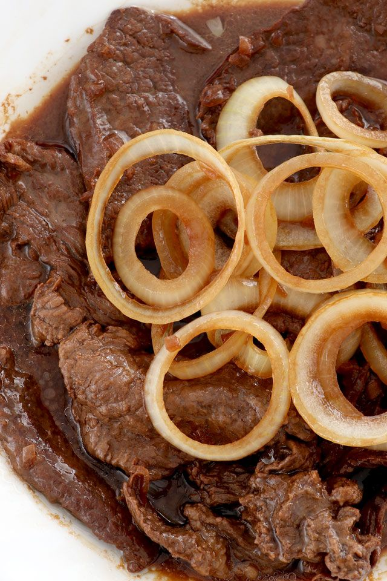

Filipino Style Beef Steak Recipe
What is Filipino Style Beef Steak?
Thin slices of beef marinated to perfection: this and more are what you can expect from a timeless beef steak! Beef steak is a dish rooted in nostalgia; it is a staple in many childhood homes. This is largely due in part to how simple the ingredients are and, even better, the cooking process too! Whether you call it beef steak, bistek as so many others fondly refer to it as, or even karne frita like in the Western Visayas region, this hearty, braised goodness is certainly welcome at any dining table.
Ingredients
2 lbs. beef
1 Knorr Beef Cube
2 onions
4 cloves garlic
1 teaspoon peppercorns
2 teaspoons cornstarch
1 1/2 teaspoons brown sugar
6 tablespoons soy sauce
1/2 lemon
2 1/2 cups water
3 tablespoons cooking oil
Instructions / How to Cook
1. Combine beef, soy sauce, juice from ½ lemon, and ½ teaspoon cracked peppercorn in a bowl. Mix well. Refrigerate for at least 1 hour.
2. Heat cooking oil in a pan. Fry each side of the marinated beef for 1 minute. Remove and set aside.
3. Using the remaining oil (you can add more if needed), sauté half of the onion and add the garlic.
4. Put the beef in the pan once the onion softens. Sauté for 1 minute.
5. Pour 1 ½ cups of water into the pan. Cover and let the liquid boil.
6. Add Knorr Beef Cube. Cover the pan and then adjust the heat to a low setting. Cook for up to 40 minutes. Note: add more water as needed.
7. Add remaining onion and season with cracked peppercorn and add brown sugar.
8. Make the sauce thicker by pouring-in the slurry. Do this by mixing cornstarch with 3 tablespoons of water.
9. Once the sauce gets thick enough, you may turn the heat off and transfer your Filipino Style Beef Steak to a serving bowl.
10. Serve with warm rice. Share and enjoy!